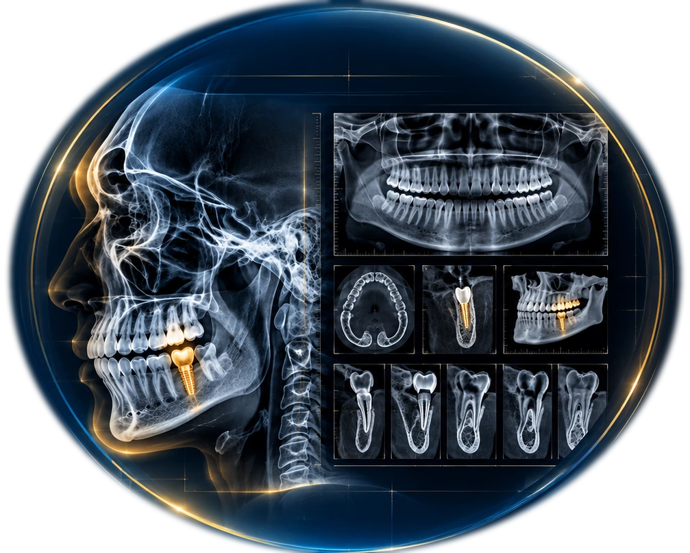

RADIOLOGIA ODONTOLÓGICA DIGITAL
RADIOLOGIA
ODONTOLÓGICA
QUE
TRANSFORMA
DECISÕES.
Laudos precisos, imagens de alta qualidade e suporte especializado
para um diagnóstico seguro e um planejamento mais previsível.
